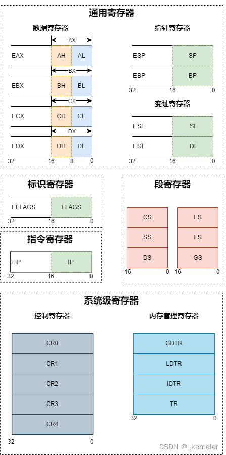
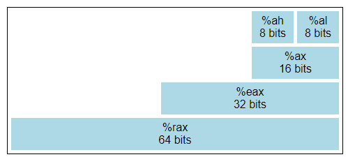
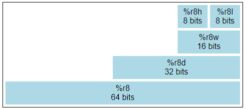

AT&T汇编基础语法
Table of Contents
前言
参考
编译
编译汇编语言可以使用 GNU 编译器 gcc 和 汇编器 as 或者 gas。一个快速了解汇编语言的方式就是去看编译器输出的汇编程序。使用 gcc -S a.c 可以将 C 语言编译为汇编语言，就可以查看对应的汇编语言了。使用 gcc a.s 就可以把对应的的汇编语言编译为可执行文件了。使用 gcc a.s -c 或者 as a.s 可以将汇编语言编译为可重定位目标文件
例如在 C 语言中经典的 hello world 程序
|
|
编译为汇编代码为
|
|
注意汇编程序由三个不同的元素组成
- 指示：以点号开始，用来指示对编译器，连接器，调试器有用的结构信息，指示本身不是汇编指令
.byte可不带参数或者带多个表达式参数，表达式之间用逗号分隔，每个表达式参数都被汇编成一个字节.short这个表达式表示任意一节中的一个或多个表达式（同样用逗号分开），表达式占一个字（两个字节）ascii字符串，并且分配空间.int整形，并且分配空间.long长整型，并且分配空间.file只是记录原始源文件名.code16告诉编译器生成 16 位的指令.data表示数据段的开始地址,.text表示实际程序代码的起始.string表示数据段中的字符串常量.globl xxx指明标签xxx是一个可以在其它模块的代码中被访问的全局符号.fill repeat, size, value其中repeat，size和value都必须是纯粹的表达式。本命令生成size个字节的repeat个副本。repeat可以是 0 或更大的值。size可以是0或更大的值, 但即使size大于 8，也被视作 8，以兼容其它的汇编器。各个副本中的内容取自一个 8 字节长的数。最高 4 个字节为零，最低的 4 个字节是value，它以as正在汇编的目标计算机的整数字节顺序排列。每个副本中的size个字节都取值于这个数最低的size个字节。这个动作只是为了兼容其他的汇编器。size参数和value参数是可选的。默认value为 0，size为 1
- 标签：以冒号结尾，用来把标签名和标签出现的位置关联起来。一般来说，以点号开始的标签都是编译器生成的临时局部标签，其它标签则是用户可见的函数和全局变量名称
.LC0:表示紧接着的字符串的名称是.LC0main:表示指令pushq %rbp是main函数的第一个指令
- 指令：实际的汇编代码一般都会缩进，以便和指示以及标签区分开来
注意
intel 汇编与 AT&T 汇编语法不一致，由于笔者的电脑编
寄存器
x86-64 将 x86 的 8 个 32 位通用寄存器扩展为 64 位，并且增加 8 个新的 64 位寄存器。调用寄存器操作数可以直接使用寄存器的名称即可，在 AT&T 中需要在寄存器前加 % ，在 intel 语法中不需要

通用寄存器
| 64位 | 低32位 | 低16位 | 低8位 | 低16位的高8位 | 作用 | |
|---|---|---|---|---|---|---|
| 累加器 | rax | eax | ax | al | ah | 函数返回值 |
| 基址寄存器 | rbx | ebx | bx | bl | bh | 用作数据存储，遵循被调用者使用规则，随便用，调用子函数之前要备份它，以防他被修改 |
| 计数器 | rcx | ecx | cx | cl | ch | 函数第4参数 |
| 数据寄存器 | rdx | edx | dx | dl | dh | 函数第3参数 |
| 栈指针 | rsp | esp | sp | spl | 指向栈的栈顶 | |
| 基址指针 | rbp | ebp | bp | bpl | 指向栈基 | |
| 源地址索引 | rsi | esi | si | sil | 函数第2参数 | |
| 目标地址索引 | rdi | edi | di | dil | 函数第1参数 | |
| 通用寄存器 | r8 - r15 | r8d - r15d | r8w - r15w | r8l - r15l | r8h - r15h | r8 做函数第5参数 |
| r9 做函数第6参数 | ||||||
| r12 - r15 用作数据存储，遵循被调用者使用规则，随便用，调用子函数之前要备份它，以防他被修改 | ||||||
| r10 r11 用作数据存储，遵循调用者使用规则，就是使用之前要先保存原值 |
一般所说的十六个通用寄存器是因为早期版本的处理器每个寄存器都有其特殊用途，并不是所有指令都可以应用到每一个寄存器。随着设计的进展，新的指令和寻址模式被添加进来，使得很多寄存器变成了等同的。少数留下来的指令，特别是和字符串处理相关的，要求使用 %rsi 和 %rdi 。另外，两个寄存器被保留下来分别作为栈指针 ( %rsp ) 和基址指针 ( %rbp )。最后的 8 个寄存器是编号的并且没有特殊限制
计算机体系结构从原来的 8 位，扩展为现在的 64 位，每个寄存器内部都有一些内部结构


一般来说使用 64 位寄存器用来寻址和浮点数运算，而 32 位寄存器用来做整数计算
其它寄存器
在 x86 中还包含其它非通用的寄存器
| 64 位 | 32 位 | 作用 | |
|---|---|---|---|
| 程序寄存器 | rip | eip | 当于PC指针指向当前的指令地址，指向下一条要执行的指令 |
| 标志寄存器 | rflag | eflag | 状态寄存器 |
| 控制寄存器 | cr0 - cr4 | 控制寄存器记录CPU运行过程中自身的一些关键信息 | |
| 控制寄存器 | cr8 | 用于获取当前的 irql 权限等级 |
x86-64 指令
x86指令通常的助记符形式为：目标地址，源地址。助记符是人类可读的机器指令表示，源地址和目标地址是指令的操作数。但是并非所有的指令都有两个操作数，有些指令甚至没有操作数
x86指令由可选前缀（prefix）、操作码（opcode）及零个或多个操作数（operand）组成
对于 x86 架构的机器指令语法格式主要有两种
intel语法，目的操作数在前，源操作数在后AT&T语法，显式地在每个寄存器名称的前面加上%符号，每个常量前面加上$符号，目的操作数在后，源操作数在前
在操作码之后会有后缀，用来表示操作数的位数，一般来说
q表示 64 位l代表 32 位w代表 16 位b代表 8 位
AT&T常用的指令
| 指令 | 功能 | |
|---|---|---|
| 转移 | mov src, dst | 将数据从 src 移动到 dst |
| 交换 | xchg dst1, dst2 | 互换 dst1 和 dst2 |
| 压栈 | push src | 将 src 压入栈中，并且 rsp 减小 |
| 出栈 | pop dst | 将数据出栈，赋给 dst ，并且 rsp 增大 |
| 整数加法 | add src, dst | 将 src 加到 dst 上， dst += src ，结果存放到 dst 上 |
| 整数减法 | sub src, dst | 等于 dst -= src ，结果存放到 dst 上 |
| 自增 | inc dst | 等于 dst += 1 ，结果存放到 dst 上 |
| 自减 | dec dst | 等于 dst -= 1 ，结果存放到 dst 上 |
| 整数除法 | idiv dst | 将 rax 除以 dst ，商存放到 rax ，余数放在 rdx ，可以使用第三个操作数来作为商的存放位置 |
| 整数乘法 | imul dst | 将 rax 乘以 dst ，结果存放到 rax ，溢出部分放在 rdx ，可以使用第三个操作数来作为结果的存放位置 |
| 比较 | cmp src1, src2 | 比较 src1 和 src2 ，根据结果设置 CPU 的状态寄存器 |
| 无条件跳转 | jmp label | 跳转到 label |
| 条件跳转 | je label | 相等跳转到 label |
| 条件跳转 | jne label | 不相等跳转到 label |
| 条件跳转 | jl label | 小于跳转到 label |
| 条件跳转 | jg label | 大于跳转到 label |
| 函数调用 | call label | 调用函数 label |
| 系统调用 | syscall | 系统调用 |
| 加载有效地址 | lea src, dst | 从 src 所指示的地址中的数据加载到 dst 中 |
| 按位逻辑与 | and src1, src2 | 执行按位逻辑与操作，结果存放到 src2 中 |
| 按位逻辑或 | or src1, src2 | 执行按位逻辑或操作，结果存放到 src2 中 |
| 按位逻辑异或 | xor src1, src2 | 执行按位逻辑异或操作，结果存放到 src2 中 |
| 按位逻辑非 | not src | 反转 src 中所有位 |
| 按位取反 | neg dst | 对操作数内容执行二进制补码求反 |
| 左移 | shl src1, src2 | 向左和向右移动它们第一个操作数的内容，用零填充得到的空位位置。移动操作最多 31 次。由第二个操作数指定要移动的位的数量，要么是一个 8 位常数要么由寄存器 CL 指定。这两种情况下大于 31 次移动将会模除 32 |
| 右移 | shr src1, src2 | 向左和向右移动它们第一个操作数的内容，用零填充得到的空位位置。移动操作最多 31 次。由第二个操作数指定要移动的位的数量，要么是一个 8 位常数要么由寄存器 CL 指定。这两种情况下大于 31 次移动将会模除 32 |
| 返回 | ret | 首先将返回地址出栈，然后执行无条件跳转至取出的代码位置处 |
标签查找
对于用到标签的，如果代码中有多个同名标签，需要查找某一个标签，就在调用指令使用这个标签时在标签名之后添加后缀 f 或者 b
f表示向上查找，使用找到的第一个b表示向下查找，使用找到的第一个
|
|
寄存器清零
有两种方式
and 0x00, %raxxor %rax, %rax
相比较来说，异或操作执行效率更改
操作数
指令有3种不同类型的操作数：寄存器操作数、内存操作数及立即数
寄存器操作数
寄存器非常小，可以快速访问位于CPU的存储器。但是某些寄存器有特殊用途，其它寄存器就是通用存储单元，用来存储 CPU 执行程序时所用到的变量。
调用寄存器操作数可以直接使用寄存器的名称即可，在 AT&T 中需要在寄存器前加 % ，在 intel 语法中不需要
内存操作数
内存操作数指的是一个内存地址，CPU 在这个地址获取单个或多字节，但是在 x86 中，每条指令中只支持一个显式内存操作数，也就是说不能在一条指令中直接将一个值从一个内存地址移动到另一个内存地址，必须使用寄存器作为中间存储
可以使用 [ base + index * scale + displacement ] 来指定内存操作数，而在 AT&T 中，应该使用 () 代替 [] ，而且语法也不同，使用 displacement(base, index, scale) 。其中
base是 64 位寄存器，基址index64 位寄存器数，索引寄存器scale比例，是1，2，4，8的整数值displacement偏移，是 32 位常量或者符号
立即数
立即数就是指令中硬编码的常量整数操作数，在 x86 上，立即数以小端格式编码，多字节整数的最低有效字节排在内存中的第一位，使用补码表示法表示有符号整数
在使用时需要在数字前加 $ 表示立即数
寻址模式
立即数寻址
直接把一个立即数在指令里给定，把这个数赋给目标操作数
|
|
寄存器寻址
不直接在指令里面给出源操作数，而是把这个源操作数放在一个寄存器里面，通过寄存器来赋值
|
|
存储器寻址
- 直接寻址：直接在指令中给出操作数的偏移地址
- 寄存器间接寻址：将操作数的地址写入寄存器中，然后利用寄存器寻找操作数的地址
- 基址寻址：
base + displacement - 变址寻址：
displacement + index * scale - 基址变址寻址：
base + index * scale + displacement
|
|
指示标号
声明静态数据区
在 x86 汇编里可以使用特定的伪指令来声明静态数据区（类似于全局变量）
.byte可不带参数或者带多个表达式参数，表达式之间用逗号分隔，每个表达式参数都被汇编成一个字节.zero后面的参数表示声明的字节数，初始值为 0，可以为大量的内存区填充零.short这个表达式表示任意一节中的一个或多个表达式（同样用逗号分开），每个表达式占一个字（两个字节）.int整形，并且分配空间.long长整型，并且分配空间ascii字符串，并且分配空间.string表示数据段中的字符串常量，初始为以null(0)结尾的
标签
以冒号结尾，用来把标签名和标签出现的位置关联起来。一般来说，以点号开始的标签都是编译器生成的临时局部标签，其它标签则是用户可见的函数和全局变量名称
汇编标签只是一个简单的地址标识符，标签主要用于程序流程控制（如分支、循环和子程序调用）
- 标签是汇编语言中用于定义代码位置的符号，通常是一个名称后跟一个冒号（如
measure_pwm_freq_start:） - 标签相当于程序的一个地址标记，当执行到
jmp，call等转移指令时，可以通过标签名来跳转到对应的内存地址继续执行 - 汇编标签不封装数据或逻辑，它仅仅代表一段代码的开始位置，没有参数传递和返回值的概念
伪指令
伪指令是内嵌在程序源代码中，由汇编器识别并执行相应动作的命令，伪指令在程序运行时并不执行。伪指令可用于定义变量、宏以及过程，可用于命名段以及执行许多其他与汇编器相关的簿记任务
调用规则
调用约定被划分为两组规则集合。第一组由函数调用者使用，第二组由子进程的编写者即被调用者使用。
**注意：**遵守调用约定的这些规则时若产生错误，将会导致严重的程序错误，因为此时的栈处于一个不连续的状态。因此实现调用约定时必须小心
调用者规则
调用子进程之前要做的
- 调用前应该保存某些寄存器的内容，这些寄存器由
caller-saved规则指定，包括eax, ecx, edx。因为被调用的子例程可以修改这些寄存器，所以如果caller需要在子例程返回后使用这些寄存器的值，则必须将这些寄存器入栈（可以在子例程返回后出栈恢复） - 为了向子例程传参，在调用子例程之前就需要将参数入栈。参数入栈遵从反向顺序（即最后一个参数第一个入栈）。因为栈往低处长，所以第一个参数会保存在最低的地址处（这种参数的倒转在历史上被函数用来传递可变数量的参数）
- 为了调用子例程，使用
call指令。这条指令在栈上所传递参数之后入栈其返回地址，然后跳入子例程，之后遵守的是接下来要介绍的callee规则
调用子进程之后，为了恢复原来的硬件状态。需要做
- 从栈中移除参数，这会将堆栈恢复到调用之前的状态
- 通过出栈
caller-saved恢复寄存器eax, ecx, edx的值。caller可以假设子例程中没有其他寄存器被修改
被调用者规则
子例程的定义应该在开头处就应坚持遵守以下规则
- 将
ebp入栈，然后使用以下指令将esp的值拷贝到ebp - 之后在栈上开辟空间以分配给局部变量。由于栈往低处长，所以为了在栈顶获取空间，
esp应该执行减法。这个减数取决于所需局部变量的数量和大小。例如，如果需要三个整型值（每个 4 字节），esp需要减去 12 才能为它的局部变量开辟空间（即sub $12, %esp）。与参数一样，局部变量也位于距基指针已知的偏移量处 - 然后保存函数将要使用的那些
callee-saved寄存器的值。也是通过入栈来保存。这些寄存器是ebx，edi和esi（esp和ebp仍要遵守调用约定，只是这个阶段暂时不需要入栈）
当子例程返回时，需要遵守以下步骤
- 在
eax中留下返回值 - 恢复被修改的
callee-saved寄存器（edi和esi）原来的值。通过出栈恢复这些寄存器的值时，出栈顺序应该和入栈顺序相反 - 回收局部变量的空间。直接的办法是
esp加上某个合适的值（因为这些空间是esp减去某个值而实现分配的）。事实上，更不容易出错的办法是拷贝ebp的值到esp（mov %ebp, %esp）。这里的原理是ebp的值，总是与esp分配空间前的值相等 - 在返回的那一刻，通过出栈
ebp而恢复caller的ebp。回想我们在子例程入口做的第一件事就是将esp原来的值入栈 - 最后，调用
ret指令返回caller。该指令会从栈中找到合适的返回地址，并删掉这个地址
C语言与汇编语言共同编译
传参规则
- 一个参数用
rdi - 两个参数用
rdirsi - 三个参数用
rdirsirdx - 四个参数用
rdirsirdxrcx - 五个参数用
rdirsirdxrcxr8 - 六个参数用
rdirsirdxrcxr8r9 - 返回值存入
rax寄存器中
C 语言调用汇编语言
需要在 C 语言中进行声明对应的函数以及其参数，并且需要在汇编语言中将函数声明为 global 类型的符号，需要注意参数传入顺序
|
|
|
|
汇编语言调用 C 语言
汇编语言调用 C 语言时，不需要声明 extern ，直接在代码中调用该函数即可，需要注意参数传入顺序
|
|
|
|
内联汇编
|
|
asm
是 gcc 关键字，表示接下来将要嵌入汇编代码。为了避免 keyword asm 与程序中其它部分产生命名冲突，可以使用 __asm__ 关键字，与之等价
volatile
是 gcc 关键字，表示不需要对下面的汇编代码做任何优化，为了避免 keyword asm 与程序中其它部分产生命名冲突，可以使用 __volatile__ 关键字，与之等价
assember template
这一部分是要嵌入的汇编指令，由于是嵌入在 C 语言之中的，所以需要使用双引号来将命令括起来，从而使得 gcc 将其以字符串的形式将这些命令传递给汇编器 as。需要注意的点如下
-
有时候汇编指令可能有多个，中间需要换行处理或者是使用分号相隔，例如
1 2asm volatile("movl %%eax, %%ebx; movl %%ebx, %%ecx;"); asm volatile("movl %%eax, %%ebx\n movl %%ebx, %%ecx\n"); -
语法问题需要注意，这里使用的汇编语法是 AT&T 的汇编语法，也就是目的操作数在后面
-
参数调用和寄存器使用需要注意
1 2int a=10, b; asm ("movl %1, %%eax; movl %%eax, %0;" : "=r"(b) : "r"(a) : "%eax");对于参数调用是使用
%n来调用的，其中n就是第n个参数，这个是从第一个output operands从 0 开始标号的，直到最后一个input operand同时为了与寄存器的调用分别，所以寄存器的使用会使用
%%来指代
output operands
该字段是可选字段，用来指明输出的操作数，一般的格式为
|
|
其中引号之内的是指定 output operands 应当遵守的约束。 output 位存放指令结果的变量，通常是一个 C 语言变量。其中 = 是 output operands 特有的约束，表示该操作数是只写的。
如果输出有多个，典型的格式如下
|
|
其中 =a 表示先将命令执行结果输出到 eax 寄存器，然后再由寄存器更新位于内存中的 output ，其它的也是如此。可以为 output operand 分别指定约束。这些约束会在下面的约束中介绍
input operands
这个字段为可选字段，可以指明输入操作数，典型格式为
|
|
其中 constraints 是 gcc 支持的各种约束方式。但是 input operands 与 output operands 的数量是有限的，并且每种指令集体系结构对于涉及到的指令支持的最多操作数也是有限制的，所以这里的操作数数量受到限制。此处具体的上限为 max(10, max_in_instruction) ，其中 max_in_instruction 是 ISA 中拥有最多操作数的那条指令所包含的操作数数目。
需要注意的是，如果指明 input operands 时，即使指令不会有 output operands 也需要给出对应的 : ，例如
|
|
list of clobbered registers
该字段为可选字段，用于列出指令中涉及到的且没有出现在 output operands 和 input operands 字段的那些寄存器，若寄存器被列入到 clobber-list ，就是告诉 gcc，哪些寄存器可能会被内联汇编命令改写。所以在执行内联汇编时，这些寄存器就不会被 gcc 分配给其它进程或者命令使用
约束
通常在 output operands 和 input operands 中通常需要指定各自的 constraints ，以便更加明确的完成期望的任务。
-
寄存器操作数约束
操作数被指定这类约束时，表明汇编指令执行时，操作数将被存储在指定的通用寄存器中，使用寄存器进行中转。具体如下
a：eax，ax，alb：ebx，bx，blc：ecx，cx，cld：edx，dx，dlS：esi，siD：edi，dir：使用以上任意一个可用寄存器
-
内存操作数约束
对于不希望使用寄存器中转，直接操作内存时，可以使用
m来约束 -
关联约束
有些时候，如果命令输入输出均为同一个变量，则可以在内联汇编中指定以
matching constraint的方式分配寄存器，此时input operands与output operands共用一个中转寄存器1asm volatile("incl %0" : "=a"(var) : "0"(var));由于输入输出均为同一个变量，因此可以使用
0来指定都用eax作为中转寄存器，需要注意的是0约束修饰的是input operands -
约束修饰符
=表示操作数在这条指令中是仅写的，这个操作数的先前值将被忽略，并向其中写入输出数据&表示操作数是一个early-clobber操作数，它在指令使用输入操作数之前被写入了值，因此这个操作数不能位于被指令读取的寄存器中，也不能位于任何作为内存地址组成部分的寄存器中。另外，如果一个early-clobber操作数也是一个读或写操作数时，该操作数只有在被使用之后才会被写入。而且early-clobber操作数总是被写入的，只读的early-clobber操作数将会在编译过程报错。实际上就是对 gcc 声明：gcc 不得为任何input opereands分配与此output operands操作表达式相同的寄存器。如果已经使用+或者=占据了约束修饰的第一个位置，那&只能占据第二个字符+添加此修饰符的操作数将同时被指令读写，当编译器修复操作数以满足约束时，它需要知道哪些操作数被指令读取，哪些操作数被指令写入。=标识一个只被写入的操作数。+标识可读可写的操作数。所有其它操作数都假定只被读取。如果在约束中指定=或+，则将其放在约束字符串的第一个字符中。在有多个选项的约束中，必须在第一个选项中添加+约束修饰符，之后的其它选项会有同样的效果，且不允许再添加+约束修饰符%可以交换操作数，使得 gcc 生成更好的代码。例如asm("fadd %0, %1, %2" : “=f”(c) : “%f”(a), “f”(b));这个汇编指令计算操作数a和b的和，然后将结果写入到c中，其中%表示如果编译器可以通过交换操作数a和b生成更好的代码的话，那么可以交换两个操作数。但是gcc只能处理asm中的一个交换对，如果使用多个%，编译器会导致错误
-
其它约束
- 空格：空白字符将被忽略，可以插入除第一个位置以外的任何位置。这使得不同操作数的每个选项在机器描述中对齐，即使它们有不同数量的约束和修饰符
m：允许内存操作数，它可以是计算机支持的任何类型的地址。注意，用于通用内存约束的字母可以由后端使用TARGET_MEM_CONSTRAINT宏重新定义o：允许使用内存运算对象，但仅当该地址是可偏移的（offsettable）。这意味着可以向地址添加一个小整数（实际上是操作数的字节宽度，由其机器模式决定），结果也是一个有效的内存地址。例如，一个常量地址是可偏移的;一个寄存器和一个常量之和的地址（只要一个稍大的常量也在机器支持的地址偏移量范围内）也是一样的;但自动递增或自动递减地址是不可偏移的。更复杂的间接/索引地址可以偏移，也可以不偏移，这取决于机器支持的其它寻址模式。需要注意，在一个可以被另一个操作数匹配的输出操作数中，约束字母o只有在同时伴有<（如果目标机器有前任寻址）和>（如果目标机器有前增量寻址）时才有效。V：一种不可偏移的内存运算对象。也就是任何符合m约束但不符合o约束的东西<：允许具有自减法寻址的内存操作数（无论是前置或后置减法）。在内联 asm 中，只有当操作数在可以处理副作用的指令中恰好使用一次时，才允许此约束。在 inline asm 模式的约束字符串中不使用带有<的操作数或在多个指令中使用它是无效的，因为副作用不会被执行或将被执行不止一次>：允许使用具有自动递增寻址（前置递增或后置递增）的内存运算对象。在 inline asm 中，应用与<有着相同的限制i：允许使用立即整型操作数（具有常值的操作数）。这包括其值只有在汇编时或以后才知道的符号常量n：允许具有已知数值的立即整数操作数。许多系统不能为小于一个字宽的操作数支持汇编时常量。这些操作数的约束应该使用n而不是iI~P：可以以一种依赖于机器的方式定义，以允许在指定范围内具有明确整数值的整数操作E：允许立即浮点操作数（表达式代码const_double），但前提是目标浮点数格式与运行编译器的主机的格式相同F：允许立即浮点操作数（表达式代码const_double或const_vector）G,H：可以以一种依赖于机器的方式定义，以允许特定值范围内的直接浮点运算对象s：允许一个值不明确的立即整数操作数g：任何通用寄存器，内存，立即整数的操作都被允许X：任何操作数都是允许的0~9：匹配约束，真正含义是，汇编程序只有一个操作数来填充 asm 区分的两个角色（在输出中分配与相应输入中相同的寄存器）p：允许一个有效的内存地址的操作数，用于load address或者push address指令。必须和address_operands一起使用